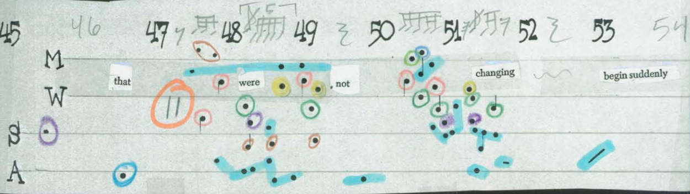

The Speaking Percussionist Project
Whiting explores the intersection of narrative and abstraction, performing new and classic works for speaking percussionist. Commissions include new music by Jeffrey Treviño, Nicholas Deyoe, Yiheng Yvonne Wu, and Brandon Pettit, plus Whiting's original compositions, transcriptions, and realizations. Includes music of Frederic Rzewski, Vinko Globokar, Jerome Kitzke, and others.

photo by Titilayo Ayangade
Cage Realizations:
51'15.657" for a speaking percussionist and others

Whiting's simultaneous performance of all of John Cage's 45' for a speaker and his 27'10.554" for a percussionist. This is a work of flexible length, and can be performed as an evening-length event, as a 5'07.154" interlude, or many divisions in between. Other Cage projects include original realizations of Music for Two (by One), A Flower, and The Wonderful Widow of Eighteen Springs for solo speaking percussionist.
An album (Blu-Ray, download, 5.1 surround sound) of these works can be found on Mode Records.
Whiting / Torrence Duo
Bonnie joins percussionist Jen Torrence (Norway) in new commissions for speaking/singing percussionists.
New music by Paula Matthusen:
New music by Bethany Younge:
Whiting / Otte Duo

Whiting joins percussionist Allen Otte (of Percussion Group Cincinnati) in continuous programs of mainly music for vocalizing percussionists. Allen and Bonnie have performed together at The Stone in New York, the John Cage Centennial Festival in Washington DC, at the 2012 Percussive Arts Society International Convention, the Carl Solway Gallery in Cincinnati, throughout New Zealand, and at colleges and universities throughout the Midwest.
red fish blue fish percussion group
red fish blue fish is ensemble in residence at the University of California San Diego, headed up by percussionist Steven Schick. The group performs new music for percussion throughout California and the US. Whiting joined the group in 2009, and was a core member through 2012. During her tenure, the group premiered new music by John Luther Adams, Mark Applebaum, Lewis Nielson, and Nicholas Deyoe and contributed to a recording of the complete ensemble works of Iannis Xenakis on Mode Records.